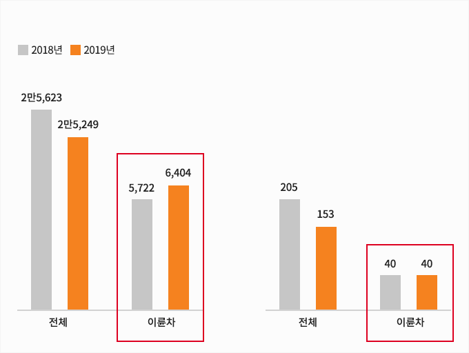
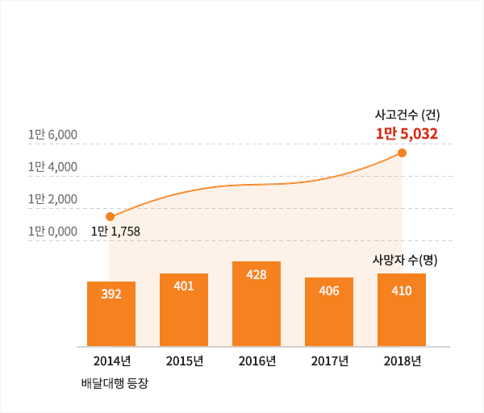
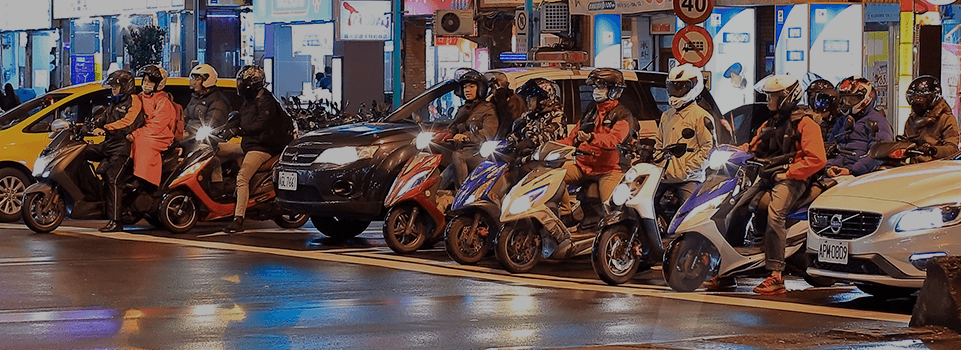
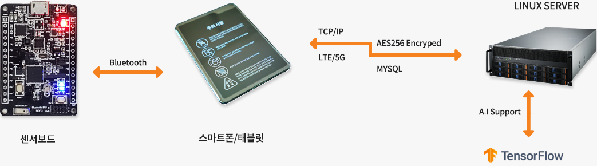

PROBLEM
2019년 84.6%, 2020년 93% (예상) ※ 실제 배달업계의 예상치는 훨씬 웃돌아
배달음식시장 규모 (단위:조원)

자료: 배달/주문 앱 업계
서울시 교통사고 건수 (단위:건)
서울시 교통사고 사망자수 (단위:명)
1~8월 기준 / 자료: 서울경찰청
- 경기불황과 극심한 취업난 속
배달음식 시장이 급성장하면서 도로 위 사고 위험에 노출 - 실제로 전체 교통사고 건수와 사망자 수는 꾸준히 감소하나
오토바이 사고에 따른 인명피해는 오히려 증가. - 일부 대형 배달대행 업체를 제외하고는
사고 위험에 무방비로 노출될 수밖에 없는 젊은 라이더들…
이륜차를 이용한 배달과정에서의 교통사고는 해마다 증가추세, 시민들의 배달 이륜차에 대한 인식도 갈수록 나빠지는 상황
최근 5년간 이륜차 교통사고 발생현황
자료: 한국교통안전공단 (2019년)

성숙한 공동체 의식의 이륜차 운전 문화 조성 시민, 협력사, 보험사 모두 Win-Win
-
모빌리티 시장의 급성장
-
높은 사고 심도
-
규제, 보험 사각지대
-
시민 안전 위협
SOLUTION
라이더로그는?
카메라가 아닌, 센서 기반의 운행기록 확인 솔루션으로, GPS, CCTV로 알 수 없던 소형모빌리티의 세세한 움직임을 기록/저장합니다.

| 자료명 | 가속도 센서 데이터 | 자이로스코프 데이터 | 자세 데이터 | 시간 데이터 |
|---|---|---|---|---|
| 자료크기 | 12 Bytes / per | 12 Bytes / per | 12 Bytes / per | 4 Bytes / per |
| 자료형 | 정수형 | 정수형 | Float (단정밀도) | 정수형 |
※ 1일 12시간 운행 시 데이터량은 다음과같음 : 40(Bytes) x 500(Hz) x 60(초) x 60(분) x 12(시간) = 864,000,000Bytes/1인 = 76.5MBytes/1인
9축 IMU 센서
가속도 센서, 자이로스코프 센서,
지자기 센서로 이루어진 센서를 이용하여
주행기록 및 주행 분석을
시간으로 수행합니다
실시간 연동
주행기록장치와 스마트폰이 결합하거나
단독으로(LTE-M 적용 시) 서버와 통신하여
데이터를 기록하고 관리할 수 있습니다
독립적인 동작
스마트폰과 연결하여 사용하면 좋지만
스마트폰과 연동을 하지 않더라도
내장된 메모리에 1초당 1000회 속도로
데이터를 저장할 수 있습니다.
세세한 운행 기록 관리
- 불법/난폭 운전 판단 알고리즘 : 인도, 횡단보도, 난폭주행 등.
- 사고 모니터링 및 판단 알고리즘 : 사고 유무, 경중 판단